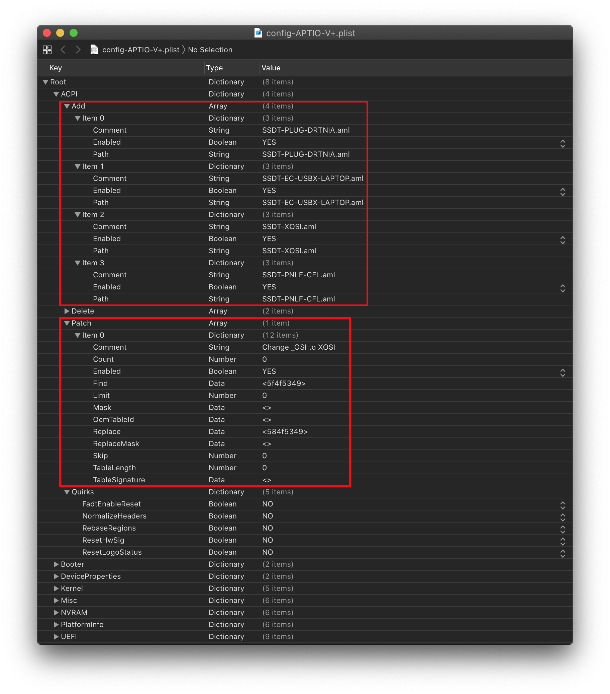
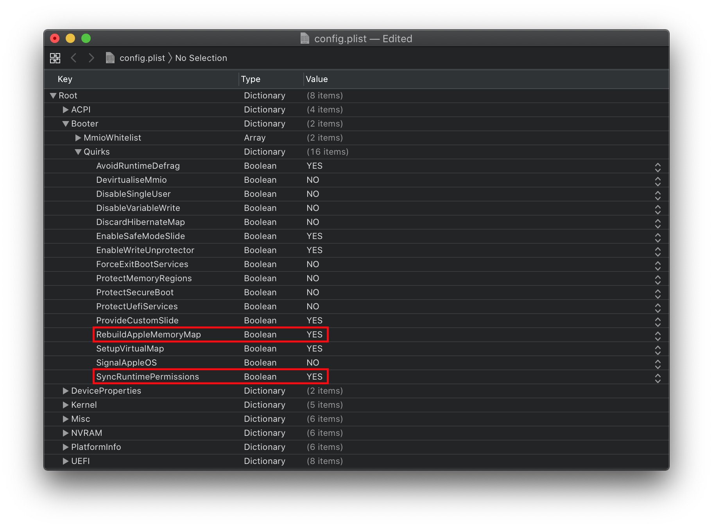
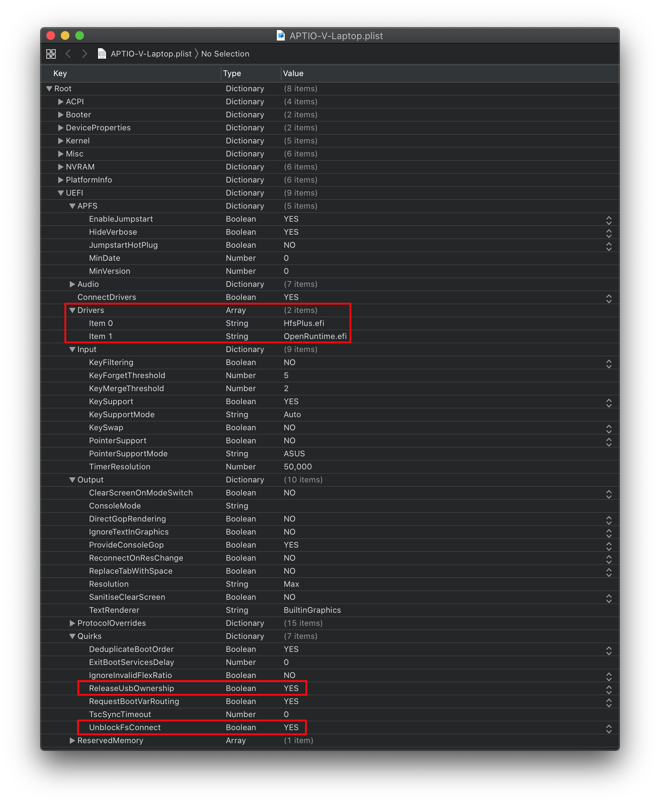

1. Coffee Lake
- Supported version: 0.5.9
1.1. Starting Point
So making a config.plist may seem hard, its not. It just takes some time but this guide will tell you how to configure everything, you won't be left in the cold. This also means if you have issues, review your config settings to make sure they're correct. Main things to note with OpenCore:
- All properties must be defined, there are no default OpenCore will fall back on so do not delete sections unless told explicitly so. If the guide doesn't mention the option, leave it at default.
- The Sample.plist cannot be used As-Is, you must configure it to your system
- DO NOT USE CONFIGURATORS, these rarely respect OpenCore's configuration and even some like Mackie's will add Clover properties and corrupt plists!
Now with all that, we'll need some things to get started:
- ProperTree: For editing our config, this editor has some super useful tools for OpenCore
- GenSMBIOS: For generating our SMBIOS
- Sample.plist: This is found under the Docs folder of the release download
Now with those downloaded, we can get to really get started:
- Grab the Sample.plist and rename to config.plist
- Open your new config.plist in ProperTree
- macOS:
ProperTree.command - Windows:
ProperTree.bat
- macOS:
- Run the Clean Snapshot function(Cmd/Ctrl + Shift + R and point it at your EFI/OC folder),
- This will remove all the entries from the config.plist and then adds all your SSDTs, Kexts and Firmware drivers to the config
- Cmd+R is another option that will add all your files as well but will leave entries disabled if they were set like that before, useful for when you're troubleshooting
And read this guide more than once before setting up OpenCore and make sure you have it set up correctly. Do note that images will not always be the most up-to-date so please read the text below them, if nothing's mentioned then leave as default.
1.2. ACPI

1.2.1. Add
This is where you'll add SSDTs for your system, these are very important to booting macOS and have many uses like USB maps, disabling unsupported GPUs and such. And with our system, its even required to boot. Guide on making them found here: Getting started with ACPI
For us we'll need a couple of SSDTs to bring back functionality that Clover provided:
| Required_SSDTs | Description |
|---|---|
| SSDT-PLUG | Allows for native CPU power management on Haswell and newer, see Getting Started With ACPI Guide for more details. |
| SSDT-EC-USBX | Fixes both the embedded controller and USB power, see Getting Started With ACPI Guide for more details. |
| SSDT-GPIO | Creates a stub so VoodooI2C can connect, for those having troubles getting VoodooI2C working can try SSDT-XOSI instead |
| SSDT-PNLF-CFL | Fixes brightness control, see Getting Started With ACPI Guide for more details. |
Note that you should not add your generated DSDT.aml here, it is already in your firmware. So if present, remove the entry for it in your config.plist and under EFI/OC/ACPI.
For those wanting a deeper dive into dumping your DSDT, how to make these SSDTs, and compiling them, please see the Getting started with ACPI page. Compiled SSDTs have a .aml extension(Assembled) and will go into the EFI/OC/ACPI folder and must be specified in your config under ACPI -> Add as well.
1.2.2. Delete
This blocks certain ACPI tables from loading, for us we can ignore this.
1.2.3. Patch
This section allows us to dynamically modify parts of the ACPI (DSDT, SSDT, etc.) via OpenCore. For us, we'll need the following:
- OSI rename
- This is required when using SSDT-XOSI as we redirect all OSI calls to this SSDT, this is not needed if you're using SSDT-GPIO
| Comment | String | Change _OSI to XOSI |
|---|---|---|
| Enabled | Boolean | YES |
| Count | Number | 0 |
| Limit | Number | 0 |
| Find | Data | 5f4f5349 |
| Replace | Data | 584f5349 |
1.2.4. Quirks
Settings relating to ACPI, leave everything here as default as we have no use for these quirks.
1.3. Booter

This section is dedicated to quirks relating to boot.efi patching with OpenRuntime, the replacement for AptioMemoryFix.efi
1.3.1. MmioWhitelist
This section is allowing spaces to be pass-through to macOS that are generally ignored, useful when paired with DevirtualiseMmio
1.3.2. Quirks
Settings relating to boot.efi patching and firmware fixes, ones we need to change are RebuildAppleMemoryMap, SyncRuntimePermissions and SetupVirtualMap
- AvoidRuntimeDefrag: YES
- Fixes UEFI runtime services like date, time, NVRAM, power control, etc
DevirtualiseMmio: NO
- Reduces Stolen Memory Footprint, expands options for
slide=Nvalues and generally useful especially on HEDT and Xeon systems
- Reduces Stolen Memory Footprint, expands options for
ForceExitBootServices: NO
- Ensures ExitBootServices calls succeeds even when the memory map has changed, don't use unless necessary
ProtectMemoryRegions: NO
- Needed for fixing artifacts and sleep-wake issues, generally only needed on very old firmwares
ProvideCustomSlide: YES
- If there's a conflicting slide value, this option forces macOS to use a pseudo-random value. Needed for those receiving
Only N/256 slide values are usable!debug message
- If there's a conflicting slide value, this option forces macOS to use a pseudo-random value. Needed for those receiving
- RebuildAppleMemoryMap: YES
- Generates Memory Map compatible with macOS, can break on some laptop OEM firmwares so if you receive early boot failures disable this
- SetupVirtualMap: YES
- Fixes SetVirtualAddresses calls to virtual addresses SyncRuntimePermissions: YES
- Fixes alignment with MAT tables and required to boot Windows and Linux with MAT tables, also recommended for macOS. Mainly relevant for Skylake and newer
1.4. DeviceProperties

1.4.1. Add
Sets device properties from a map.
PciRoot(0x0)/Pci(0x2,0x0)
This section is set up via WhateverGreen's Framebuffer Patching Guide and is used for setting important iGPU properties.
When setting up your iGPU, the table below should help with finding the right values to set. Here is an explanation of some values:
- Device-id
- The actual Device ID used by the graphics drivers to figure out if it's an iGPU. If your iGPU isn't natively supported, you can add
device-idto fake it as a native iGPU
- The actual Device ID used by the graphics drivers to figure out if it's an iGPU. If your iGPU isn't natively supported, you can add
- AAPL,ig-platform-id
- This is used internally for setting up the iGPU
- Stolen Memory
- The minimum amount of iGPU memory required for the framebuffer to work correctly
- Port Count + Connectors
- The number of displays and what types are supported
Generally follow these steps when setting up your iGPU properties. Follow the configuration notes below the table if they say anything different:
- When initially setting up your config.plist, only set AAPL,ig-platform-id - this is normally enough
- If you boot and you get no graphics acceleration (7MB VRAM and solid background for dock), then you likely need to set device-id as well
Note that highlighted entries with a star(*) are the recommended entries to use:
| iGPU | device-id | AAPL,ig-platform-id | Port Count | Stolen Memory | Framebuffer Memory | Connectors |
|---|---|---|---|---|---|---|
| Intel UHD Graphics 630 | 003E0000 | 0000003E | 3 | 57MB | 0MB | LVDSx1 DPx2 |
| Intel UHD Graphics 630 | 923E0000 | 0000923E | 3 | 57MB | 0MB | LVDSx1 DPx2 |
| Intel UHD Graphics 630 | 923E0000 | 0900923E | 3 | 57MB | 0MB | LVDSx1 DUMMYx2 |
| Intel UHD Graphics 630 * | 9B3E0000 | 00009B3E | 3 | 57MB | 0MB | LVDSx1 DPx2 |
| Intel UHD Graphics 630 | 9B3E0000 | 06009B3E | 1 | 38MB | 0MB | LVDSx1 DUMMYx2 |
| Intel UHD Graphics 630 | 9B3E0000 | 09009B3E | 3 | 57MB | 0MB | LVDSx1 DPx2 |
| Intel Iris Plus Graphics 655 | A53E0000 | 0000A53E | 3 | 57MB | 0MB | LVDSx1 DPx2 |
| Intel Iris Plus Graphics 655 | A53E0000 | 0400A53E | 3 | 57MB | 0MB | LVDSx1 DPx2 |
| Intel UHD Graphics 630 | A53E0000 | 0500A53E | 3 | 57MB | 0MB | LVDSx1 DPx2 |
| Intel Iris Plus Graphics 655 | A53E0000 | 0900A53E | 3 | 57MB | 0MB | LVDSx1 DPx2 |
Configuration Notes
- For
UHD630you likely do not need to fake thedevice-idas it is already8086:3E9B. If it's anything else, you may usedevice-id=9B3E0000- You can check under Device Manager in Windows by bring up the iGPU, opening properties, selecting details, and clicking Hardware IDs.
- An
UHD620in a Comet Lake CPU requires:device-id=9B3E0000AAPL,ig-platform-id=00009B3E
PciRoot(0x0)/Pci(0x1b,0x0)
layout-id
- Applies AppleALC audio injection, you'll need to do your own research on which codec your motherboard has and match it with AppleALC's layout. AppleALC Supported Codecs.
- You can delete this property outright as it's unused for us at this time
For us, we'll be using the boot argument alcid=xxx instead to accomplish this. alcid will override all other layout-IDs present. More info on this is covered in the Post-Install Page
1.4.2. Delete
Removes device properties from the map, for us we can ignore this
1.5. Kernel

1.5.1. Add
Here's where you specify which kexts to load, order matters here so make sure Lilu.kext is always first! Other higher priority kexts come after Lilu such as VirtualSMC, AppleALC, WhateverGreen, etc. A reminder that ProperTree users can run Cmd/Ctrl + Shift + R to add all their kexts in the correct order without manually typing each kext out.
- BundlePath
- Name of the kext
- ex:
Lilu.kext
- Enabled
- Self-explanatory, either enables or disables the kext
- ExecutablePath
- Path to the actual executable is hidden within the kext, you can see what path your kext has by right-clicking and selecting
Show Package Contents. Generally, they'll beContents/MacOS/Kextbut some have kexts hidden within underPluginfolder. Do note that plist only kexts do not need this filled in. - ex:
Contents/MacOS/Lilu
- Path to the actual executable is hidden within the kext, you can see what path your kext has by right-clicking and selecting
- PlistPath
- Path to the
info.plisthidden within the kext - ex:
Contents/Info.plist
- Path to the
1.5.2. Emulate
Needed for spoofing unsupported CPUs like Pentiums and Celerons
- CpuidMask: Leave this blank
- CpuidData: Leave this blank
1.5.3. Block
Blocks certain kexts from loading. Not relevant for us.
1.5.4. Patch
Patches both the kernel and kexts.
1.5.5. Quirks
Settings relating to the kernel, for us we'll be enabling AppleCpuPmCfgLock, AppleXcpmCfgLock, DisableIOMapper, PanicNoKextDump, PowerTimeoutKernelPanic and XhciPortLimit. Everything else should be left as default
- AppleCpuPmCfgLock: YES
- Only needed when CFG-Lock can't be disabled in BIOS, Clover counterpart would be AppleIntelCPUPM. Please verify you can disable CFG-Lock, most systems won't boot with it on so requiring use of this quirk
AppleXcpmCfgLock: YES
- Only needed when CFG-Lock can't be disabled in BIOS, Clover counterpart would be KernelPM. Please verify you can disable CFG-Lock, most systems won't boot with it on so requiring use of this quirk
CustomSMBIOSGuid: NO
- Performs GUID patching for UpdateSMBIOSMode Custom mode. Usually relevant for Dell laptops
- DisableIoMapper: YES
- Needed to get around VT-D if either unable to disable in BIOS or needed for other operating systems, much better alternative to
dart=0as SIP can stay on in Catalina
- Needed to get around VT-D if either unable to disable in BIOS or needed for other operating systems, much better alternative to
DisableRtcChecksum: NO
- Prevents AppleRTC from writing to primary checksum (0x58-0x59), required for users who either receive BIOS reset or are sent into Safe mode after reboot/shutdown
IncreasePciBarSize: NO
- Increases 32-bit PCI bar size in IOPCIFamily from 1 to 4 GB, enabling Above4GDecoding in the BIOS is a much cleaner and safer approach. Some X99 boards may require this, you'll generally experience a kernel panic on IOPCIFamily if you need this
- LapicKernelPanic: NO
- Disables kernel panic on AP core lapic interrupt, generally needed for HP systems. Clover equivalent is
Kernel LAPIC
- Disables kernel panic on AP core lapic interrupt, generally needed for HP systems. Clover equivalent is
- PanicNoKextDump: YES
- Allows for reading kernel panics logs when kernel panics occur
PowerTimeoutKernelPanic: YES
- Helps fix kernel panics relating to power changes with Apple drivers in macOS Catalina, most notably with digital audio.
XhciPortLimit: YES
- This is actually the 15 port limit patch, don't rely on it as it's not a guaranteed solution for fixing USB. Please create a USB map when possible.
The reason being is that UsbInjectAll reimplements builtin macOS functionality without proper current tuning. It is much cleaner to just describe your ports in a single plist-only kext, which will not waste runtime memory and such
1.6. Misc

1.6.1. Boot
Settings for boot screen (Leave everything as default).
1.6.2. Debug
Helpful for debugging OpenCore boot issues(We'll be changing everything but DisplayDelay).
- AppleDebug: YES
- Enables boot.efi logging, useful for debugging. Note this is only supported on 10.15.4 and newer
- ApplePanic: YES
- Attempts to log kernel panics to disk
- DisableWatchDog: YES
- Disables the UEFI watchdog, can help with early boot issues
- Target:
67- Shows more debug information, requires debug version of OpenCore
- DisplayLevel:
2147483650- Shows even more debug information, requires debug version of OpenCore
These values are based of those calculated in OpenCore debugging
1.6.3. Security
Security is pretty self-explanatory, do not skip.
We'll be changing AllowNvramReset, AllowSetDefault, Vault and ScanPolicy
- AllowNvramReset: YES
- Allows for NVRAM reset both in the boot picker and when pressing
Cmd+Opt+P+R
- Allows for NVRAM reset both in the boot picker and when pressing
- AllowSetDefault: YES
- Allow
CTRL+EnterandCTRL+Indexto set default boot device in the picker
- Allow
- AuthRestart: NO
- Enables Authenticated restart for FileVault 2 so password is not required on reboot. Can be considered a security risk so optional
- BlacklistAppleUpdate: True
- Ignores Apple's firmware updater, recommended to enable as to avoid issues with installs and updates
- BootProtect: None
- Allows the use of Bootstrap.efi inside EFI/OC/Bootstrap instead of BOOTx64.efi, useful for those wanting to either boot with rEFInd or avoid BOOTx64.efi overwrites from Windows. Proper use of this quirks is not be covered in this guide
- ExposeSensitiveData:
6- Shows more debug information, requires debug version of OpenCore
- Vault:
Optional- We won't be dealing vaulting so we can ignore, you won't boot with this set to Secure
- This is a word, it is not optional to omit this setting. You will regret it if you don't set it to
Optional, note that it is case-sensitive
- ScanPolicy:
00allows you to see all drives available, please refer to the desktop guide's Security section for further details. Will not boot USB devices with this set to default
1.6.4. Tools
Used for running OC debugging tools like the shell, ProperTree's snapshot function will add these for you. For us, we won't be using any tools.
- Name
- Name shown in OpenCore
- Enabled
- Self-explanatory, enables or disables
- Path
- Path to file after the
Toolsfolder - ex: OpenShell.efi
- Path to file after the
1.6.5. Entries
Used for specifying irregular boot paths that can't be found naturally with OpenCore.
Won't be covered here, see 8.6 of Configuration.pdf for more info
1.7. NVRAM

1.7.1. Add
4D1EDE05-38C7-4A6A-9CC6-4BCCA8B38C14 (Booter Path, mainly used for UI Scaling)
UIScale:
01: Standard resolution(Clover equivalent is0x28)02: HiDPI (generally required for FileVault to function correctly on smaller displays, Clover equivalent is0x2A)
DefaultBackgroundColor: Background color used by boot.efi
00000000: Syrah BlackBFBFBF00: Light Gray
7C436110-AB2A-4BBB-A880-FE41995C9F82 (System Integrity Protection bitmask)
- General Purpose boot-args:
| boot-args | Description |
|---|---|
| -v | This enables verbose mode, which shows all the behind-the-scenes text that scrolls by as you're booting instead of the Apple logo and progress bar. It's invaluable to any Hackintosher, as it gives you an inside look at the boot process, and can help you identify issues, problem kexts, etc. |
| debug=0x100 | This disables macOS's watchdog which helps prevents a reboot on a kernel panic. That way you can hopefully glean some useful info and follow the breadcrumbs to get past the issues. |
| keepsyms=1 | This is a companion setting to debug=0x100 that tells the OS to also print the symbols on a kernel panic. That can give some more helpful insight as to what's causing the panic itself. |
| alcid=1 | Used for setting layout-id for AppleALC, see supported codecs to figure out which layout to use for your specific system. More info on this is covered in the Post-Install Page |
- GPU-Specific boot-args:
| boot-args | Description |
|---|---|
| -wegnoegpu | Used for disabling all other GPUs than the integrated Intel iGPU, useful for those wanting to run newer versions of macOS where their dGPU isn't supported |
- csr-active-config: Settings for SIP, generally recommended to manually change this within Recovery partition with
csrutilvia the recovery partition
csr-active-config is set to 00000000 which enables System Integrity Protection. You can choose a number of other options to enable/disable sections of SIP. Some common ones are as follows:
00000000- SIP completely enabled03000000- Allow unsigned kexts and writing to protected file system locationsE7030000- SIP completely disabled
Recommended to leave enabled for best security practices
- nvda_drv: <>
- For enabling Nvidia Web Drivers, set to 31 if running a Maxwell or Pascal GPU. This is the same as setting nvda_drv=1 but instead we translate it from text to hex, Clover equivalent is
NvidiaWeb. AMD, Intel and Kepler GPU users should delete this section.
- For enabling Nvidia Web Drivers, set to 31 if running a Maxwell or Pascal GPU. This is the same as setting nvda_drv=1 but instead we translate it from text to hex, Clover equivalent is
- prev-lang:kbd: <>
- Needed for non-latin keyboards in the format of
lang-COUNTRY:keyboard, recommended to keep blank though you can specify it(Default in Sample config is Russian): - American:
en-US:0(656e2d55533a30in HEX) - Full list can be found in AppleKeyboardLayouts.txt
- Hint:
prev-lang:kbdcan be changed into a String so you can inputen-US:0directly instead of converting to HEX
- Needed for non-latin keyboards in the format of
| Key | Type | Value |
|---|---|---|
| prev-lang:kbd | String | en-US:0 |
1.7.2. Delete
Forcibly rewrites NVRAM variables, do note that Add will not overwrite values already present in NVRAM so values like boot-args should be left alone.
LegacyEnable: NO
- Allows for NVRAM to be stored on nvram.plist, needed for systems without native NVRAM
LegacyOverwrite: NO
- Permits overwriting firmware variables from nvram.plist, only needed for systems without native NVRAM
LegacySchema:
- Used for assigning NVRAM variables, used with LegacyEnable set to YES
WriteFlash: YES
- Enables writing to flash memory for all added variables.
1.8. PlatformInfo

For setting up the SMBIOS info, we'll use CorpNewt's GenSMBIOS application.
For this Coffee Lake example, I chose the MacBookPro15,1 SMBIOS - this is done intentionally for compatibility's sake. The breakdown is as follows:
| SMBIOS | CPU Type | GPU Type | Display Size | Touch ID |
|---|---|---|---|---|
| MacBookPro15,1 | Hexa Core 45w | iGPU: UHD 630 + dGPU: RP555/560X | 15" | Yes |
| MacBookPro15,2 | Quad Core 15w | iGPU: Iris 655 | 13" | Yes |
| MacBookPro15,3 | Hexa Core 45w | iGPU: UHD 630 + dGPU: Vega16/20 | 15" | Yes |
| MacBookPro15,4 | Quad Core 15w | iGPU: Iris 645 | 13" | Yes |
Run GenSMBIOS, pick option 1 for downloading MacSerial and Option 3 for selecting out SMBIOS. This will give us an output similar to the following:
#######################################################
# MacBookPro15,1 SMBIOS Info #
#######################################################
Type: MacBookPro15,1
Serial: C02XG0FDH7JY
Board Serial: C02839303QXH69FJA
SmUUID: DBB364D6-44B2-4A02-B922-AB4396F16DA8
The Type part gets copied to Generic -> SystemProductName.
The Serial part gets copied to Generic -> SystemSerialNumber.
The Board Serial part gets copied to Generic -> MLB.
The SmUUID part gets copied to Generic -> SystemUUID.
We set Generic -> ROM to either an Apple ROM (dumped from a real Mac), your NIC MAC address, or any random MAC address (could be just 6 random bytes, for this guide we'll use 11223300 0000. After install follow the Fixing iServices page on how to find your real MAC Address)
Reminder that you want either an invalid serial or valid serial numbers but those not in use, you want to get a message back like: "Invalid Serial" or "Purchase Date not Validated"
Automatic: YES
- Generates PlatformInfo based on Generic section instead of DataHub, NVRAM, and SMBIOS sections
1.8.1. Generic
- SpoofVendor: YES
- Swaps vendor field for Acidanthera, generally not safe to use Apple as a vendor in most case
- AdviseWindows: NO
- Used for when the EFI partition isn't first on the Windows drive
UpdateDataHub: YES
- Update Data Hub fields
UpdateNVRAM: YES
- Update NVRAM fields
UpdateSMBIOS: YES
- Updates SMBIOS fields
UpdateSMBIOSMode: Create
- Replace the tables with newly allocated EfiReservedMemoryType, use Custom on Dell laptops requiring CustomSMBIOSGuid quirk
1.9. UEFI

ConnectDrivers: YES
- Forces .efi drivers, change to NO will automatically connect added UEFI drivers. This can make booting slightly faster, but not all drivers connect themselves. E.g. certain file system drivers may not load.
1.9.1. Drivers
Add your .efi drivers here.
Only drivers present here should be:
- HfsPlus.efi
- OpenRuntime.efi
1.9.2. APFS
Settings related to the APFS driver, leave everything here as default.
1.9.3. Audio
Related to AudioDxe settings, for us we'll be ignoring(leave as default). This is unrelated to audio support in macOS.
- For further use of AudioDxe and the Audio section, please see the Post Install page: Add GUI and Boot-chime
1.9.4. Input
Related to boot.efi keyboard pass-through used for FileVault and Hotkey support.
- KeyFiltering: NO
- Verifies and discards uninitialized data, mainly prevalent on 7 series Gigabyte boards
- KeyForgetThreshold:
5- The delay between each key input when holding a key down, for best results use
5milliseconds
- The delay between each key input when holding a key down, for best results use
- KeyMergeThreshold:
2- The length of time that a key will be registered before resetting, for best results use
2milliseconds
- The length of time that a key will be registered before resetting, for best results use
- KeySupport:
YES- Enables OpenCore's built in key support and required for boot picker selection, do not use with OpenUsbKbDxe.efi
- KeySupportMode:
Auto- Keyboard translation for OpenCore
- KeySwap:
NO- Swaps
OptionandCmdkey
- Swaps
- PointerSupport:
NO- Used for fixing broken pointer support, commonly used for Z87 Asus boards
- PointerSupportMode:
- Specifies OEM protocol, currently only supports Z87 and Z97 ASUS boards so leave blank
- TimerResolution:
50000- Set architecture timer resolution, Asus Z87 boards use
60000for the interface. Settings to0can also work for some
- Set architecture timer resolution, Asus Z87 boards use
1.9.5. Output
Relating to OpenCore's visual output, leave everything here as default as we have no use for these quirks.
1.9.6. ProtocolOverrides
Mainly relevant for Virtual machines, legacy macs and FileVault users. See here for more details: Security and FileVault
1.9.7. Quirks
DeduplicateBootOrder: YES
- Request fallback of some Boot prefixed variables from
OC_VENDOR_VARIABLE_GUIDtoEFI_GLOBAL_VARIABLE_GUID. Used for fixing boot options.
- Request fallback of some Boot prefixed variables from
ReleaseUsbOwnership: YES
- Releases USB controller from firmware driver, needed for when your firmware doesn't support EHCI/XHCI Handoff. Most laptops have garbage firmwares so we'll need this as well
RequestBootVarRouting: YES
- Redirects AptioMemoryFix from
EFI_GLOBAL_VARIABLE_GUIDtoOC\_VENDOR\_VARIABLE\_GUID. Needed for when firmware tries to delete boot entries and is recommended to be enabled on all systems for correct update installation, Startup Disk control panel functioning, etc.
- Redirects AptioMemoryFix from
UnblockFsConnect: NO
- Some firmware block partition handles by opening them in By Driver mode, which results in File System protocols being unable to install. Mainly relevant for HP systems when no drives are listed
1.9.8. ReservedMemory
Used for exempting certain memory regions from OSes to use, mainly relevant for Sandy Bridge iGPUs or systems with faulty memory. Use of this quirk is not covered in this guide
1.10. Cleaning up
And now you're ready to save and place it into your EFI under EFI/OC.
For those having booting issues, please make sure to read the Troubleshooting section first and if your questions are still unanswered we have plenty of resources at your disposal:
Sanity check:
So thanks to the efforts of Ramus, we also have an amazing tool to help verify your config for those who may have missed something:
1.10.1. Config reminders
HP Users:
- Kernel -> Quirks -> LapicKernelPanic -> True
- You will get a kernel panic on LAPIC otherwise
- UEFI -> Quirks -> UnblockFsConnect -> True
Dell Users:
For Skylake and newer:
- Kernel -> Quirk -> CustomSMBIOSGuid -> True
- PlatformInfo -> UpdateSMBIOSMode -> Custom
1.11. Intel BIOS settings
1.11.1. Disable
- Fast Boot
- Secure Boot
- VT-d (can be enabled if you set
DisableIoMapperto YES) - CSM
- Thunderbolt(For initial install, as Thunderbolt can cause issues if not setup correctly)
- Intel SGX
- Intel Platform Trust
- CFG Lock (MSR 0xE2 write protection)(This must be off, if you can't find the option then enable both
AppleCpuPmCfgLockandAppleXcpmCfgLockunder Kernel -> Quirks. Your hack will not boot with CFG-Lock enabled)
1.11.2. Enable
- VT-x
- Above 4G decoding
- Hyper-Threading
- Execute Disable Bit
- EHCI/XHCI Hand-off
- OS type: Windows 8.1/10 UEFI Mode
- DVMT Pre-Allocated(iGPU Memory): 64MB